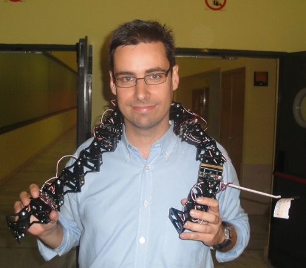

El próximo jueves 17 de Junio daré una charla sobre robots ápodos modulares en la ETSI de Telecomunicación de la Universidad de Málaga, organizada por el Departamento de Tecnología Electrónica dentro del Máster de Robótica.
Muchas gracias a Cristina Urdiales por invitarme 😉